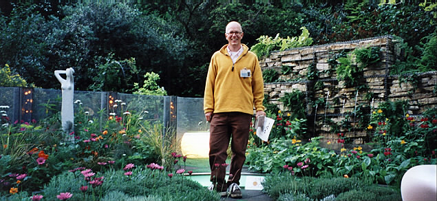

After receiving his diploma from the English Gardening School in 2000, Philip Cole formed wild-thyme and has since undertaken work for conductor Sir Simon Rattle, fashion designer Stella McCartney, film producer Tony Garnett and opera singers Barbara Bonney, Susan Bullock and Lynne Dawson. He has also worked with the Dowager Marchioness of Salisbury on the construction of a private garden on the Hampton Court Palace Estate.
But not all clients can be wealthy or famous and, to survive in what has become a highly competitive market, he knows it is vital to put as much effort into maintaining local window-boxes as he does when designing a roof terrace in Chelsea, an allotment in Chiswick, a fruit orchard in Dorset or a Zen courtyard in Marylebone.
Philip was selected to enter a 'chic' garden at the 2002 Chelsea Flower Show and won a medal for his first attempt, a design which incorporated neon, rubber and dry-stone walling together with a bold planting scheme.
He also contributes to various magazines – read some of his recent magazine articles.
Click here to read some of his testimonials and thanks from clients.